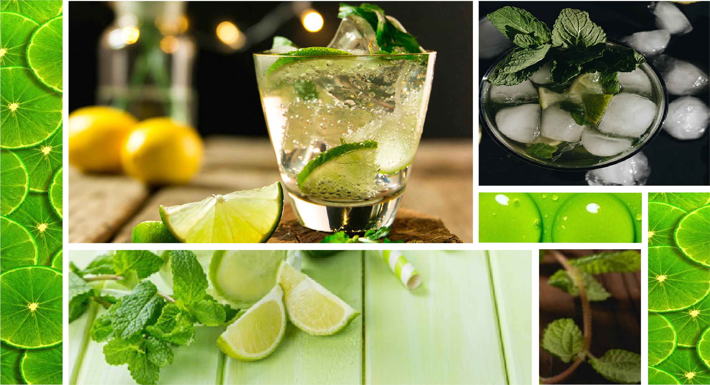

¿Cómo hacer el mejor Mojito?

Mojito Cubano
¡Hola! ¿Cómo estás? Hoy vengo a ayudarte a hacer tus propios tragos, revoluciona esa previa y sorprende a tus amigos jugando a ser el barman del grupo. Hay muchas formas de prepararlo y los ingredientes también varían, como el azúcar moreno o el azúcar blanco, pero siempre su sabor suave es ideal para acompañar todo tipo de eventos. ¿No te tenés fé? Confiá en Tito y ¡manos a la obra!
INGREDIENTES
- 40 ml. de ron blanco
- Una lima exprimida, unos 30 ml. de jugo
- 6 hojas de menta o hierbabuena
- 2 cucharaditas de azúcar blanco
- Hielo picado
- Soda o agua con gas
PASO A PASO
- Cortar la lima por la mitad y exprimirla en un vaso
- Añadir el azúcar y remover
- Agregar la hierbabuena o menta, y con un mortero o el dorso de una cuchara machacar un poco, para que suelten su aceite esencial. No hay que triturar las hojas, solo machacarlas un poco, sin romperlas.
- Agregar hielo picado hasta la mitad del vaso
- Añadir la soda, hasta llenar aproximadamente ⅔ del vaso
- Ahora agregar el ron. Pueden regular la cantidad según el gusto de quien va a beber el mojito, poniendo un poco más o un poco menos de la medida aconsejada. Mezclar bien.
- Decorar con una hojita de menta, servir y repetir el proceso por la cantidad de amigos que sean